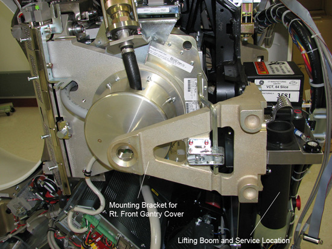
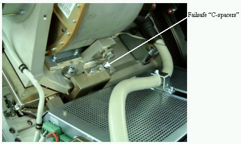
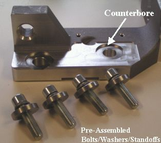

Operating Documentation
Direction 5193575-800, Rev# 5
LightSpeed 7.X Service Information - Adv
Operating Documentation |
| Required Persons | Preliminary Reqs | Procedure | Finalization |
|---|---|---|---|
| 1 | Timing Not Applicable | 1 hour | 7 hours |
| Last Revised: | 20 November 2008 |
| Item | Qty | Effectivity | Part# | Manufacturer | |
|---|---|---|---|---|---|
| HV Bleeder Kit | 1 | - | 2345332 | - | |
| Oil Compensation Tool | 1 / | - | 5125182 | - | |
| Mineral-based dielectric (Transformer) Oil | - | T0552G (1 gallon) | - | ||
| VCT Chain Hoist | 1 | - | 5149069 (Non-CE); 5192679 (CE) | - | |
| Oil Flow Meter | 1 | - | 5151781 | - | |
| Hercules Coolant Air Removal Kit | 1 | - | 5151778 | - | |
| Oscilloscope | 1 | - | - | - | |
| Digital Multimeter | 1 | - | - | - | |
| Tube hoist and boom | 1 | - | - | - | |
| Spanner Wrench | 1 | - | - | - | |
| Dial Indicator Gauges | 2 | - | - | - | |
| Item | Qty | Effectivity | Part# | Manufacturer |
|---|---|---|---|---|
| Dry Wipes or Paper Towel | - | - | - |
| Item | Qty | Effectivity | Part# | Manufacturer | |
|---|---|---|---|---|---|
| Tube | 1 | - | - | - | |
| POTENTIAL FOR ELECTRIC SHOCK. | |
| LETHAL VOLTAGES MAY BE PRESENT IN THE GANTRY. | |
| Follow proper Electrical Lockout/Tagout procedures. |
| POTENTIAL FOR PERSONAL INJURY (PINCH, CRUSH, ENTANGLEMENT OR IMPACT INJURIES ARE POSSIBLE). | |
| GANTRY HAS ROTATING ASSEMBLY. | |
| Use the Gantry’s Rotational Lock, to prevent uncommanded motion of the Gantry’s rotating assembly. |
| The heat exchanger may take on excessive amounts of coolant due to thermal expansion if the tube is not allowed to cool prior to tube change. If this occurs, the system will not scan and the heat exchanger will require replacement. Therefore, you should wait at least 1 hour after the last scan before disconnecting the tube from the heat exchanger. | |
| Condition | Reference | Eff |
|---|---|---|
Perform LOTO at A1 Disconnect Panel. | - | - |
Before performing this procedure, familiarize yourself with the Performix Pro100 Tube Crate information and Securing HV Cable (Pro 16) procedure.
Remove and set aside gantry side, top and front covers.
Remove the M12 bolts holding mounting bracket for the right front gantry cover and set the assembly aside. It may be necessary to tilt the gantry back to remove the third bolt (not normally installed).
Illustration 1: Mounting bracket for right front gantry cover and lift hoist service location

Turn off the AXIAL DRIVE ENABLE, HVDC ENABLE, and 120VAC switches on the service switch panel.
| 120 / 208 VAC Gantry power must not be on with any of the coolant / heat exchanger hoses disconnected. With Gantry power on and the cooling loop incomplete, the pump will run uncontrollably and become damaged. | |
Turn off facility power to PDU and lockout/tagout according to lockout/tagout procedure.
Position gantry so that the tube is positioned between 11 and 12 o'clock, and the HV Tank is at the 3 o'clock position.
| NOTE: | The HV cable's candlestick has a rubber sealing ring that must not be lost. |
Free the HV cable.
Carefully cut all tie-wraps securing HV cable. Note HV cable routing.
Loosen the cable's locking ring.
Pull cable terminal stick out of its receptacle on HV tank. Place tube crate cover over the HV cable stick. DO NOT lose the rubber sealing ring.
Place a cap or enough paper towel in the newly created hole on the HV tank receptacle to prevent oil from leaking when you manually rotate the gantry to remove the tube.
Remove the 2 failsafe “c-spacers” on the top and the bottom. Keep hardware for re-install with new tube.
Illustration 2: Failsafe Collimator “C-Spacers”

Manually rotate the Gantry until the X-Ray tube reaches the 3 o'clock position.
| CRUSH POINT. | |
| IF THE GANTRY IS NOT SECURELY LOCKED, UPON REMOVAL OF THE X-RAY TUBE, THE GANTRY WILL VIOLENTLY ROTATE DUE TO WEIGHT IMBALANCE. | |
| Ensure the gantry is securely locked by attempting to rotate the gantry by hand. |
Engage rotational lock.
Remove Power I/F board cover.
Disconnect thermal sensor from Power I/F board at J7. Cut any tie-wraps holding the wires to the gantry.
Remove dial mounting bracket. See Illustration 3.
Illustration 3: Dial Mounting Bracket

Disconnect anode stator cable from aux box.
Remove 3 pin connector from aux box.
Disconnect the clamp holding the cable to aux box. Keep the clamp, as you will need it for the new tube.
Remove POR (Z-Align) adjustment screw. Keep hardware.
Disconnect the pump from the tube at the quick disconnect (QD). Align the pin with the slot on the QD and disconnect. Discard the quick disconnect safety mechanism bolts. The new tube comes with new hardware.
Disconnect X-Ray tube from heat exchanger at quick disconnect.
Insert the lifting post, boom, and chain hoist. Refer to Illustration 1 for location.
Disconnect Smart ID cable from Smart ID module (on tube).
Connect hoist to the tube's lifting bar.
Ensure that the hoist joint is centered directly above the tube (Chain hangs vertically).
Remove slack in chain but do not over tighten. The tube should not move when the mounting bolts are removed.
Remove the two bottom M12 mounting bolts, and then remove the upper bolts.
Discard the mounting bolts and washers. The new tube comes with new mounting bolts.
| Be careful not to damage the fragile copper filter on the tube’s window. | |
Place the tube in the crate for shipping. For more information, see the Performix Pro100 Tube Crate procedure.
Allow the tube unit to warm to room temperature before you install it.
| CRUSH POINT. | |
| THE TUBE LIES ON ITS SIDE IN THE CRATE AND WILL FLIP 90 DEGREES WHEN IT IS RAISED. | |
| Ensure that you place the crate so that neither you nor the gantry is hit by the tube as it is raised out of the crate. |
| Use care when hoisting the tube, to avoid equipment damage. | |
Place new tube near gantry so that you can attach the hoist to the hook(s) and use the hoist to lift the tube into place. For more information, see Performix Pro100 Tube Crate.
With tube suspended, visually inspect the copper filter. The primary copper filter is easily examined, since it is part of the tube and visible. The copper filter should be clean, as well as dent and scratch free:
If contamination is visible (see Illustration 4), proceed to Collimator Cleaning Procedure.
If scratches or dust are visible, the copper filter must be replaced.
Slight discoloration is acceptable.
Illustration 4: Extremely Contaminated Copper Filter

Attach adjuster screw from old tube to new tube.
Carefully swing the tube into place. The tube casing should slide in between the collimator frame's “fingers”.
| POTENTIAL FOR PATIENT INJURY. | |
| X-RAY TUBE IS ON ROTATING ASSEMBLY. | |
| Select proper bolt kit from tube crate, based on system type. NEVER mix the mounting hardware types. |
| When attaching the tube, be careful with the Copper Filter. It should be free of debris, scratches and dust. The reason is particles create artifacts in the image by affecting the attenuation properties of the copper filter. | |
Using the new pre-assembled mounting hardware shipped with the tube, align the tube mounting through-holes with the mounting points on the collimator frame. Hand turn the (4) M12 mounting bolts into the holes a few turns. This enables easier alignment of the tube and interposer plate.
| EJECTION HAZARD | |
| TUBE MAY EJECT IF IMPROPER MOUNTING HARDWARE COMBINATION USED. | |
| READ THE FOLLOWING INSTALLATION INSTRUCTIONS CAREFULLY TO ENSURE THAT THE PROPER MOUNTING HARDWARE IS USED. |
The hardware used to mount the x-ray tube comes preassembled with the new tube.
Illustration 5: Pre-assembled bolt / lockwasher / standoff

Finger tighten bolts. Getting the tube to lie flat during this step is important.
| NOTE: | Using the ISO adjustment bolt to move the interposer plate up or down can aid in getting the tube to lie flat. |
Disconnect hoist.
Visually look to see that the tube is close to centered in the Z-direction (for reference, the table cradle moves in the Z-direction)
Adjust M12 mounting bolts to pre-load torque specification. Refer to Table 1.
Table 1: Pre-load Torque Specification
| 25 ft.-lbs | 33 N-m | 295 in-lbs | 340 kg-cm |
Apply final torque on all four M12 bolts according to the values specified in Table 2.
Table 2: Final Torque
| 49 ft.-lbs | 66 N-m | 590 in-lbs | 680 kg-cm |
| Do not turn 120 / 208 VAC Gantry power on with any of the coolant/ heat exchanger hoses disconnected. With Gantry power on and the cooling loop incomplete, the pump will run uncontrollably and become damaged. | |
Remove the post and boom from the gantry.
Disengage rotational lock.
Connect the stator cable to the aux box. Use the clamp from the old tube to attach the exposed shield to the aux box.
Connect both the pump AND the heat exchanger hoses to the tube.
Using new hardware from tube crate, secure the quick disconnect safety locking mechanisms. The torque spec. for the quick disconnect safety mechanisms is 7.9 N-m (5.8 lb-ft, 70 lb-in, 81 kg-cm), however, if the locking mechanism rotates in relation to the quick disconnect, tighten slowly until it does not do so.
| NOTE: | Do not severely overtighten the M6 bolts. Doing so can cause the quick disconnects to leak. |
Connect the thermal sensor to the Power Interface Board, J7.
Reattach Power I/F board cover.
Reattach the dial mounting bracket.
Reattach the SMART ID cable.
| PATIENT OR OPERATOR CRUSH HAZARD | |
| IMPROPER MOUNTING CAN RESULT IN TUBE EJECTION AND SERIOUS INJURY | |
| Mount tube according to instructions, including new mounting hardware and c-spacers. |
Reattach the failsafe c-spacers. See Illustration 2.
| Incorrectly sealed and secured HV cable can lead to damage to the tank, tube, or other parts of the gantry. | |
Rotate tube to 12 o'clock position.
Connect the HV cable. See Securing HV Cable (Pro 16) for more information.
Reattach POR adjuster block.
Connect Smart ID cable from power interface board to Smart ID module on tube.
Check for oil leaks by rotating the gantry slowly.
Manually rotate the gantry, at least one full revolution, and verify that no rubbing occurs.
Tie-wrap all cables:
Stator cable
HV cable
Tube thermal switch
Install the right gantry front cover bracket. Refer to Illustration 1 in tube removal process.
Restore system power at the main disconnect panel.
Turn on gantry 120 VAC, HVDC ENABLE and AXIAL DRIVE ENABLE on the service switch panel. Press DRIVES RESET.
Checklist:
New mounting bolts and washers are used for mounting the tube; old mounting bolts and washers are discarded.
Proper torque specifications are followed for all fasteners (see “General Torque Cross Reference” in Torque Wrench Information).
Tie-wraps and cables are in place.
It may be necessary to compensate the Heat Exchanger. This ensures that the amount of oil in the Heat Exchanger is correct. SeeHeat Exchanger Compensation (Oil-based Heat Exchangers only)
It may be necessary to check oil coolant flow rate (see Hercules Coolant Flow Rate Measurement). If flow rate is low, then perform Hercules Coolant Air Removal Procedure.
Reset TnT (in JEDI Generator Tool, Data Management Pane).
Tube Z-Align
HV Tank Feedback Resistor Verification (bleeder test)
HHS Scans
Tube Usage Information is found on the Common Service Desktop following path:
Error Logs>Tube Usage>Details.
Detailed Calibration
Save System State